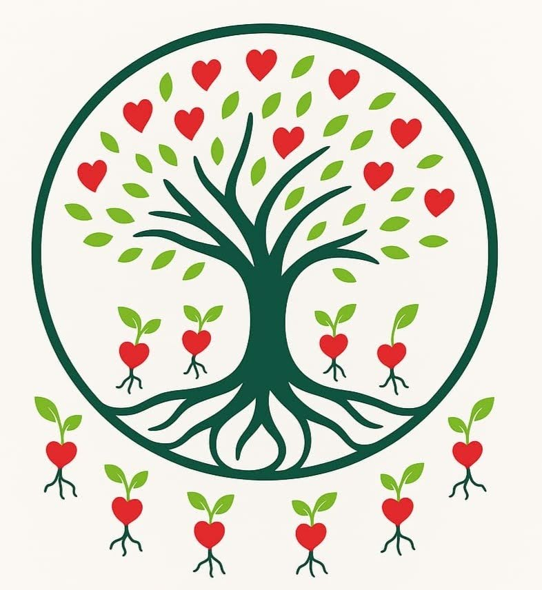

Logo studies
A logo, still forming
Studies toward a mark for recursive.eco that captures not only iteration but emergence — and a more tree-like view. Drafts, not decisions.

The spiral
The mark as it stands — a golden logarithmic spiral. Clean and legible, but it says iteration: the same turn again, tighter. It doesn't yet say emergence.
The breathing spiral
The same spiral, drawn and breathing — the version in the site header. Alive, but still a single closed figure.

The tree
The earliest sketch of the whole idea — many branches (grammars), one trunk. This is the tree-like view we want the mark to remember.
The spiral that won't close
A draft: the spiral begins exactly as the hero mark, then — where it would close into a circle — breaks at a new angle and keeps going, from the same origin. Iteration that refuses to become a loop.
The heart forest
The direction we're most drawn to. One heart falls, roots, and grows a tree; each heart it bears falls and grows its own — inheriting the last, drifting from it. One small grammar, a whole biodiverse forest — this is emergence, not just iteration, the thesis of the project drawn as a living thing. (Toggle Biodiverse ↔ Monoculture to see the difference mutation makes.)
These are drafts to iterate from. See the current mark in context on the About page.